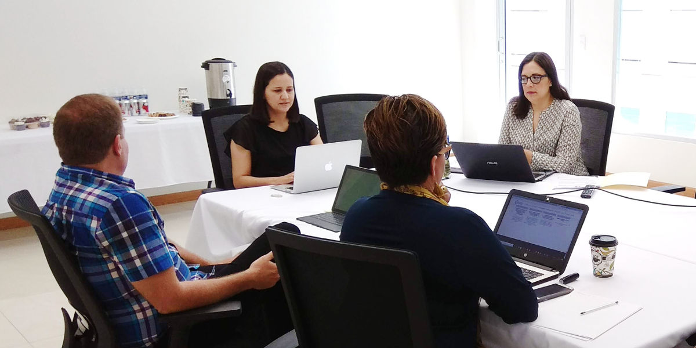
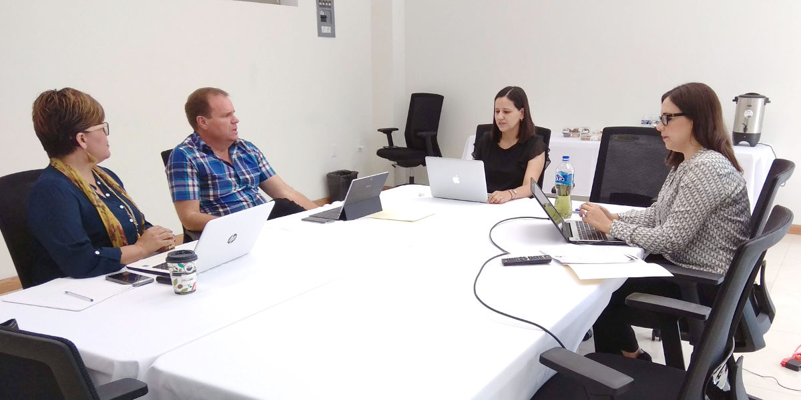

Comisión Ejecutiva del Sistema Anticorrupción del Estado de Coahuila de Zaragoza.
El pasado 22 de agosto, se llevó a cabo la 6ª Sesión Extraordinaria de la Comisión Ejecutiva del Sistema Anticorrupción del Estado de Coahuila, cuyo objetivo fue dar seguimiento al programa de trabajo de la propia comisión, así como presentar, el avance en el diseño de la política estatal anticorrupción.
Juan Adolfo Von Bertrab, Consejero de Participación Ciudadana y responsable de la Comisión de Vinculación con Municipios, presentó el avance del proyecto de la designación de los titulares de los Órganos Internos de Control para los municipios, mismo que se encuentra en resolución en el Congreso del Estado. El Consejero Von Bertrab, comentó los acuerdos de la pasada reunión nacional el tema municipal, entre ellos, que se compartirán las buenas prácticas en la implementación de cada uno de los proyectos de las entidades federativas y su vinculación municipal.
La Consejera Lourdes de Kóster, comentó que desarrolla un modelo de comunicación y difusión para el Sistema Anticorrupción, con el propósito de dar a conocer a la ciudadanía, las acciones que se realizan en el marco del Sistema. Además, comunicó con los integrantes de la Comisión Ejecutiva la agenda de vinculación con la sociedad civil, sector empresarial y académico.
En el tema relativo a la plataforma digital y sistemas de información, Ana Solís, presentó los documentos base para la construcción de la metodología de sistematización, intercambio e integración de las bases de datos e indicadores que contendrá dicha plataforma. Por otra parte, comentó el avance en la integración del diagnóstico y alineación de la política anticorrupción del Estado de Coahuila a la propuesta de política nacional.
En otro tema, Marcela Castañeda, Secretaria Técnica de la Secretaría Ejecutiva informó el avance en la integración de las acciones del Plan de Trabajo del Comité Coordinador, el avance en la propuesta estatal de la política anticorrupción, además de la reunión llevada acaba con las y los representantes del Comité Coordinador.

